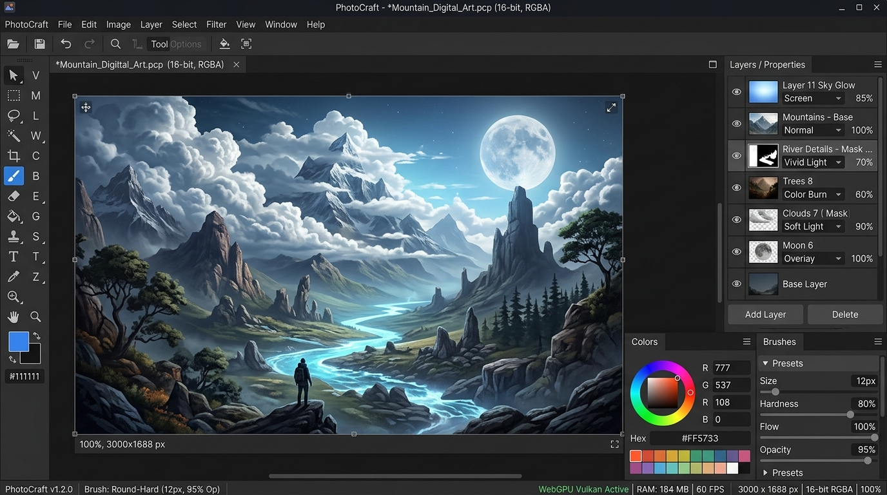

빅테크 독점의 해자를 허무는 오픈소스 혁명
컴파일된 실행 파일에서 PSD 레이어 블렌딩 셰이더와 비공개 규격을 자동 역추적해 오픈소스로 찍어내는 로컬 MCP 툴킷. 어도비 독점 해자 붕괴 논쟁 발발.
1. 반나절 만에 무너진 어도비의 30년 구독 제국
구독자 50만 명의 테크 유튜버 MilerDev가 올린 한 편의 영상("ArtCraft Challenges Adobe with Free Software Written in Rust!")이 전 세계 소프트웨어 업계를 발칵 뒤집어 놓았다. 영상 속 개발자는 어도비(Adobe)의 내부 소스코드를 단 한 줄도 훔쳐보지 않았다. 대신 자신의 컴퓨터에 설치된 포토샵 실행 파일(바이너리)을 오픈소스 도구인 REA(Reverse Engineer Anything)에 입력한 뒤, 앤트로픽의 최신 코딩 에이전트인 Claude Code에게 단 한 줄의 프롬프트를 입력했을 뿐이다.
2. MCP가 증명한 '클린룸 리버스 엔지니어링'의 폭발적 위력
그동안 소프트웨어 역공학은 고도의 전문성을 지닌 보안 연구원들이 Ghidra나 IDA Pro를 띄워놓고 어셈블리어 수만 줄을 수작업으로 뜯어보던 고통스러운 영역이었다. 하지만 morluto/rea는 이 복잡한 디스어셈블러 도구를 MCP(Model Context Protocol) 서버 형태로 래핑하여 AI 에이전트의 두뇌에 직접 연결했다.
에이전트는 바이너리를 실행하며 비공개 REST 규격과 PSD 파일의 복잡한 24개 레이어 블렌딩 모드 수식을 스스로 추출해 낸다. 그리고 이 '행동 증거'를 바탕으로 기존 소스코드를 베끼지 않고 완전히 새로 작성하는 '클린룸 재구현(Clean-Room Reimplementation)' 방식으로 순수 Rust 코드를 빌드해 낸 것이다.
3. 연 140억 달러 어도비 구독 제국에 닥친 실존적 위기
블룸버그(Bloomberg)와 스트래터처리(Stratechery)가 주목하는 본질은 "소프트웨어 해자(Moat)의 붕괴"다. 어도비가 연간 140억 달러(약 19조 원)에 달하는 Creative Cloud 구독료를 매달 강제할 수 있었던 이유는, 수십 년간 얽혀 있는 독점 파일 포맷(PSD)과 특화된 그래픽 렌더링 엔진을 다른 경쟁자가 밑바닥부터 다시 짜는 데 수백억 원의 R&D 비용이 들었기 때문이다.
그러나 미국 연방대법원의 저작권 판례(Sega v. Accolade 및 Sony v. Connectix)에 따르면, 호환성과 인터페이스 분석을 위한 리버스 엔지니어링 및 이를 기반으로 한 클린룸 독립 코딩은 명백한 합법(Fair Use)이다. REA와 AI 에이전트는 이 합법적 클린룸 엔지니어링의 시간을 '수년'에서 '오후 한나절'로 압축해 버렸다.
실제로 이 파이프라인을 타고 탄생한 ArtCraft와 PhotoCraft는 포토샵의 무거운 4GB 메모리 점유율을 단 180MB로 줄이며, 구독료 없는 완전 무료 오픈소스 창작 도구로서 전 세계 디자이너들의 열렬한 지지를 받고 있다.
